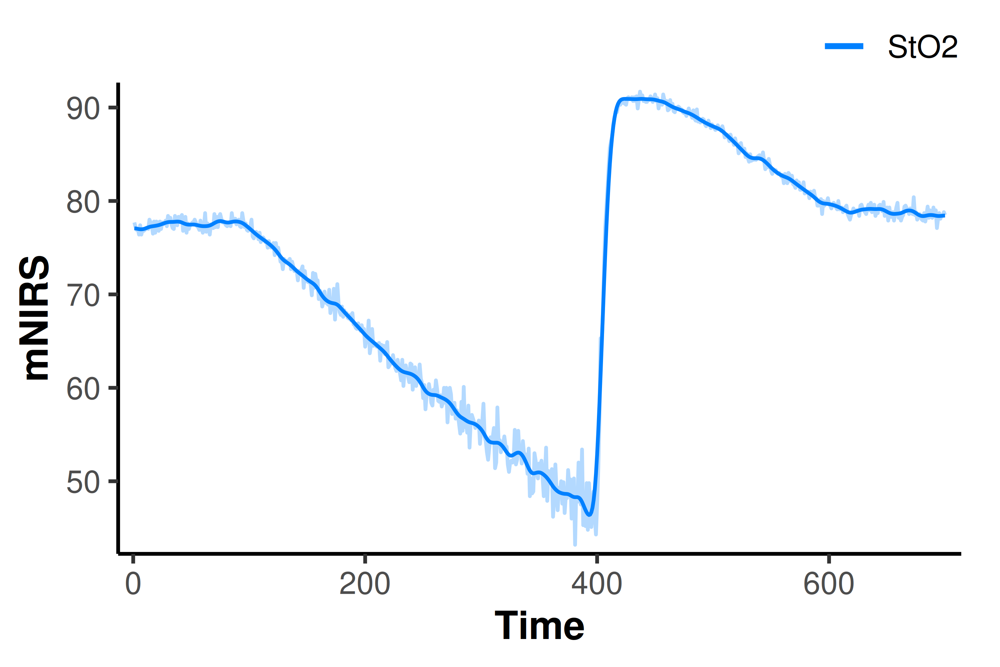
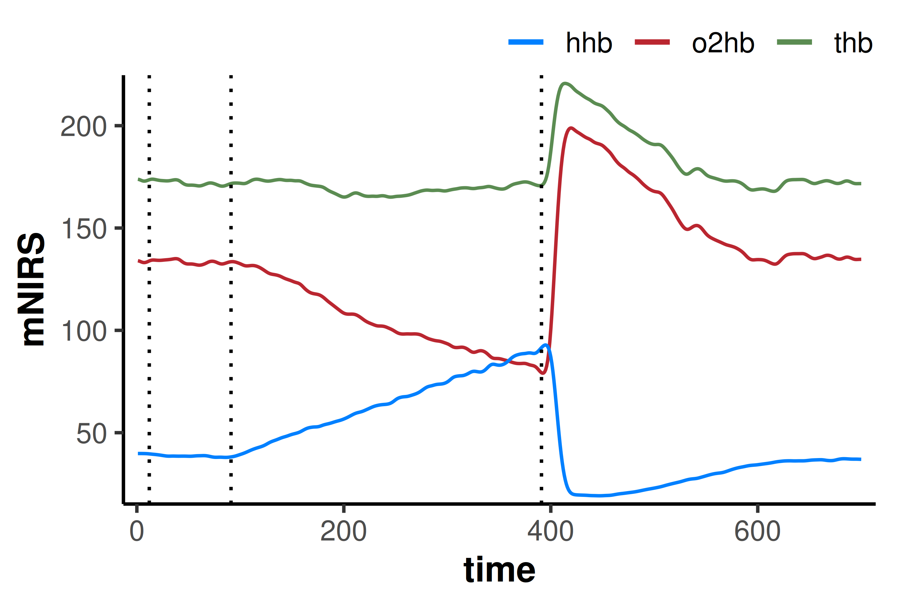
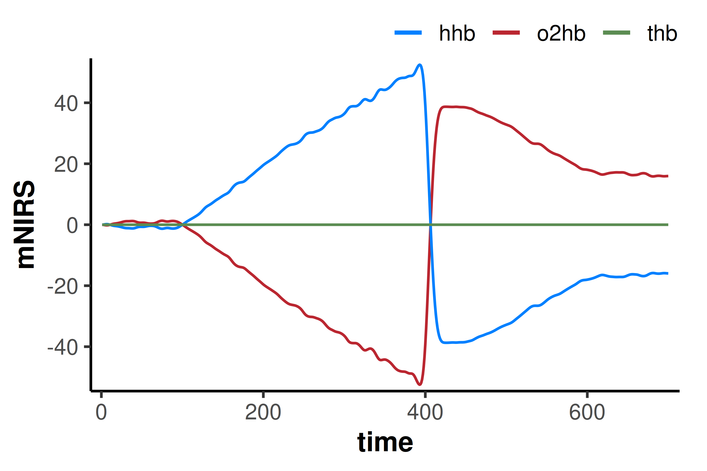
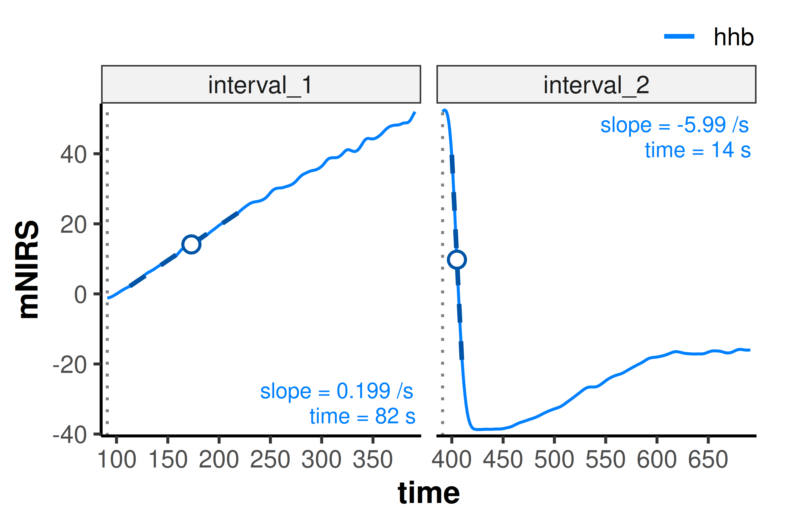
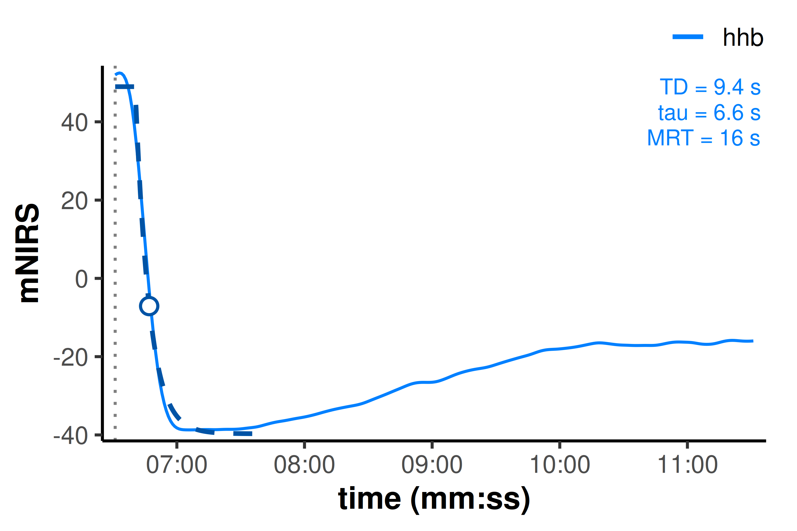
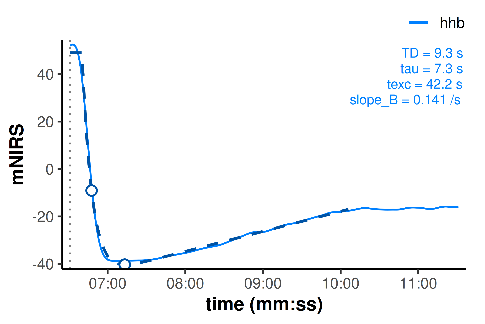
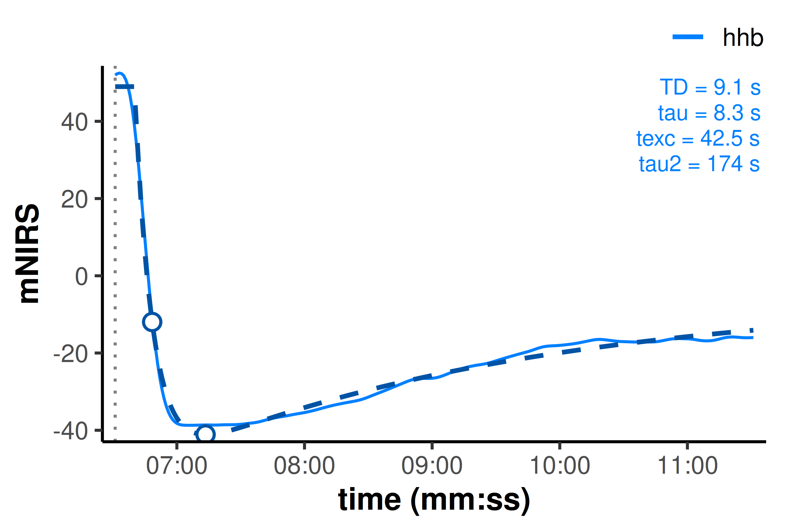

Reading and analysing PIONIRS data with mnirs
2026-09-12
Source:vignettes/articles/PIONIRS-demo.qmd
Introduction
{mnirs} can now read PIONIRS NIRSBOX .ftn and .ftn2 file exports directly with read_mnirs(). This article demonstrates reading both file types and running a short processing and analysis pipeline on an arterial occlusion recording.
Note
This article assumes basic familiarity with the {mnirs} package. See Reading and Cleaning Data with mnirs for an overview.
Setup
Automatic .ftn(2) file channel detection
PIONIRS .ftn(2) files are recognised automatically. With no channels specified, read_mnirs() returns "Time" as time_channel, "TagLabel" as event_channel, and any “StO2” channels as nirs_channels.
When automatically detecting a known NIRS device file format, all columns are returned to allow exploration of the file.
## read an example file with no additional parameters
## file paths are hidden for this example
df_sto2 <- read_mnirs(example_mnirs("pionirs"))
print(df_sto2, n = 5)
#> # A tibble: 700 × 15
#> Time Iteration Tag TagLabel StO2 uA_L1 uS_L1 uA_L2 uS_L2 DPF_L1 DPF_L2
#> <dbl> <dbl> <dbl> <chr> <dbl> <dbl> <dbl> <dbl> <dbl> <dbl> <dbl>
#> 1 1 1 0 <NA> 77.7 0.307 10.4 0.362 10.2 4.48 4.1
#> 2 2 2 0 <NA> 77.2 0.308 10.4 0.358 9.87 4.45 4.05
#> 3 3 3 0 <NA> 76.9 0.308 10.5 0.354 9.8 4.47 4.05
#> 4 4 4 0 <NA> 77 0.307 10.5 0.356 9.96 4.48 4.08
#> 5 5 5 0 <NA> 76.4 0.305 10.2 0.346 9.53 4.44 4.03
#> # ℹ 695 more rows
#> # ℹ 4 more variables: O2Hb <dbl>, HHb <dbl>, THb <dbl>, DQI <dbl>Filtering the data
filter_mnirs() applies a digital filter to all nirs_channels automatically retrieved from metadata in the data frame of class “mnirs” read above.
Here, a Butterworth low-pass 2nd-order filter with cutoff frequency 0.05 Hz seems to smooth the data sufficiently.
df_filt <- filter_mnirs(
df_sto2,
method = "butterworth",
order = 2,
fc = 0.05
)
## overlay unfiltered data for comparison
plot(df_filt) +
geom_line(
data = df_sto2,
aes(y = `StO2`, colour = "StO2"),
alpha = 0.3
)
Specify explicit NIRS channels for analysis
Channels can also be specified and renamed explicitly. Since we have already read the file, we can instead modify channels using create_mnirs_data(). We will specify the raw haemoglobin concentration signals, with the event column containing manually entered labels.
df_raw <- create_mnirs_data(
df_filt,
nirs_channels = c(o2hb = "O2Hb", hhb = "HHb", thb = "THb"),
time_channel = c(time = "Time"),
event_channel = c(labels = "TagLabel")
) |>
filter_mnirs(method = "butterworth", order = 2, fc = 0.05)
plot(df_raw) +
geom_vline(
data = subset(df_raw, !is.na(labels)),
aes(xintercept = time),
linetype = "dotted"
)
Correct for blood volume: Δtotal[haem]
correct_blood_volume() normalises oxy-, deoxy-, and total[haem] for changes in blood volume during the occlusion. Channels must be specified explicitly to avoid naming ambiguity.
df_corr <- correct_blood_volume(
df_raw,
oxy_channel = o2hb,
deoxy_channel = hhb,
total_channel = thb
)
plot(df_corr)
Extract deoxygenation & reoxygenation intervals
extract_intervals() can locate the labels “Occlusion start” and “Recovery”. an end value can also be specified, or a timespan (in units of time_channel) can be defined around each detected event label, to return the desired interval lengths.
O2 extraction or rate of mV̇O2 can be estimated from the peak 120-sec linear slope during the occlusion deoxygenation (“slope 1”).
Reoxygenation kinetics or microvascular responsiveness is typically estimated as the peak 10-sec slope after occlusion (“slope 2”), or with a monoexponential model. We will extract the full reoxygenation and hyperaemia phase for analysis.
We will isolate the “deoxy[haem]” channel to analyse, since “hhb” and “o2hb” are now mirror images of each other.
df_list <- extract_intervals(
df_corr,
nirs_channels = hhb,
start = by_label("Occlusion", "Recovery"),
span = c(0, 300)
)
print(df_list, n = 5)
#> $interval_1
#> # A tibble: 301 × 15
#> time Iteration Tag labels StO2 uA_L1 uS_L1 uA_L2 uS_L2 DPF_L1 DPF_L2 o2hb
#> <dbl> <dbl> <dbl> <chr> <dbl> <dbl> <dbl> <dbl> <dbl> <dbl> <dbl> <dbl>
#> 1 91 91 1 Occlu… 77.8 0.296 10.3 0.353 9.85 4.51 4.07 1.17
#> 2 92 92 0 <NA> 77.7 0.302 10.4 0.352 9.95 4.5 4.1 1.11
#> 3 93 93 0 <NA> 77.7 0.301 10.6 0.350 9.86 4.54 4.09 1.04
#> 4 94 94 0 <NA> 77.6 0.291 10.1 0.354 10.0 4.49 4.1 0.949
#> 5 95 95 0 <NA> 77.6 0.299 10.4 0.355 10.0 4.5 4.1 0.832
#> # ℹ 296 more rows
#> # ℹ 3 more variables: hhb <dbl>, thb <dbl>, DQI <dbl>
#>
#> $interval_2
#> # A tibble: 301 × 15
#> time Iteration Tag labels StO2 uA_L1 uS_L1 uA_L2 uS_L2 DPF_L1 DPF_L2 o2hb
#> <dbl> <dbl> <dbl> <chr> <dbl> <dbl> <dbl> <dbl> <dbl> <dbl> <dbl> <dbl>
#> 1 391 391 1 Recov… 46.7 0.538 11.3 0.327 9.58 3.62 4.15 -52.0
#> 2 392 392 0 <NA> 46.5 0.582 12.0 0.323 9.49 3.62 4.15 -52.3
#> 3 393 393 0 <NA> 46.4 0.525 11.0 0.319 9.38 3.61 4.14 -52.5
#> 4 394 394 0 <NA> 46.4 0.561 11.7 0.328 9.7 3.62 4.17 -52.3
#> 5 395 395 0 <NA> 46.7 0.576 11.8 0.321 9.52 3.59 4.16 -51.8
#> # ℹ 296 more rows
#> # ℹ 3 more variables: hhb <dbl>, thb <dbl>, DQI <dbl>Analyse microvascular responsiveness
Peak linear regression slope
analyse_kinetics(method = "peak_slope") fits a rolling linear regression algorithm across the full interval, and returns the greatest (positive or negative, depending on direction) slope centred within the specified time span.
We can specify different span parameter for each interval with a named list().
result_deoxy <- analyse_kinetics(
df_list,
method = "peak_slope",
span = list(interval_1 = 120, interval_2 = 10)
) |>
print()
#>
#> Peak Linear Response Rate
#> Model Coefficients:
#> interval nirs_channels start_time slope intercept peak_slope_time
#> 1 interval_1 hhb 91.0 0.1987 -2.174 82
#> 2 interval_2 hhb 391 -5.988 93.59 14
plot(result_deoxy)
Analyse reoxygenation kinetics
Now let’s look at some of the more advanced kinetics analysis methods we can fit during the reoxygenation and hyperaemia window.
Monoexponential
method = "monoexponential" fits an exponential curve to the data. end_window = 30 dynamically ends the fitting window at the first peak or trough (depending on direction) with no more extreme values within 30 sec, avoiding the post-hyperaemic decay toward baseline which is non-asymptotic and would bias the monoexponential time constant coefficient.
result_monoexp <- analyse_kinetics(
df_list[2],
method = "monoexponential",
end_window = 30 ## includes 30-sec after the first local extrema
) |>
print()
#>
#> Monoexponential One-Phase Kinetics
#> Model Coefficients:
#> interval nirs_channels start_time A B TD tau k MRT
#> 1 interval_2 hhb 391 48.98 -39.70 9.421 6.563 0.1524 15.98
plot(result_monoexp, time_labels = TRUE)
With experimental kinetics analysis methods (still under development and not yet validated), we can avoid this potential for coefficient bias by modelling the hyperaemic drift as a secondary linear slope component in a two-phase “exponential-linear” kinetics response.
Exponential-drift
method = "exponential_drift" (or "exponential_linear") fits a linear slope term after the primary monoexponential response, to separate the fast reoxygenation phase from the slow hyperaemic drift.
result_drift <- analyse_kinetics(
df_list[2],
method = "exponential_drift",
end_window = 180 ## includes more of the hyperaemic response
) |>
print()
#>
#> Exponential-Linear Drift Two-Phase Kinetics
#> Model Coefficients:
#> interval nirs_channels start_time model A B TD
#> 1 interval_2 hhb 391 exponential_drift 49.00 -42.91 9.258
#> tau k MRT texc slope_B
#> 1 7.343 0.1362 16.60 42.21 0.1409
plot(result_drift, time_labels = TRUE)
Biexponential
method = "biexponential" is another experimental method which fits a two-phase response with overlapping fast and slow monoexponential curves.
result_biexp <- analyse_kinetics(
df_list[2],
method = "biexponential"
## `end_window = Inf` by default; fitting to the full data available
) |>
print()
#>
#> Biexponential Two-Phase Kinetics
#> Model Coefficients:
#> interval nirs_channels start_time model A B TD tau
#> 1 interval_2 hhb 391 biexponential 48.98 -50.77 9.112 8.287
#> MRT texc B2 tau2
#> 1 17.40 42.49 -5.639 173.7
plot(result_biexp, time_labels = TRUE)
Compare fit diagnostics
Fit diagnostics are stored in results$diagnostics and can be used to statistically and qualitatively compare between models.
Information criteria (aic, aicc, bic) can be used to compare between models with different numbers of parameters (n_params). Lower values represent statistically “better” fitting models, after penalising extra parameters (each criterion uses slightly different weights and may disagree on marginal differences).
However, in this case, because each model is fit on a different number of samples (n_obs) in addition to parameters, the information criteria cannot be used to statistically conclude better fit.
The other model diagnostics can be used as qualitative comparators, and the “best” model can be chosen based on physiological expectations, experimental design, and established validity.
Caution
Two-phase Exponential-drift and Biexponential kinetics are currently experimental methods and have not yet been validated.
rbind(
monoexponential = result_monoexp$diagnostics,
exponential_drift = result_drift$diagnostics,
biexponential = result_biexp$diagnostics
)
#> interval nirs_channels n_obs n_params r2 adj_r2
#> monoexponential interval_2 hhb 66 4 0.9931830 0.9928532
#> exponential_drift interval_2 hhb 216 5 0.9947398 0.9946401
#> biexponential interval_2 hhb 301 6 0.9908865 0.9907320
#> rmse cv_rmse snr aic aicc bic
#> monoexponential 2.724835 0.15514626 21.66407 329.6177 330.6177 340.5660
#> exponential_drift 1.418235 0.05774017 22.78996 775.9280 776.3299 796.1796
#> biexponential 1.617703 0.07245608 20.40315 1157.7672 1158.1495 1183.7170In this example, r2, rmse, and snr (signal-to-noise ratio) suggest that the biexponential model is not capturing the shape the full hyperaemic decay and return to baseline, as well as the exponential-linear drift model over the hyperaemic component alone.
Acknowledgements
Thanks to Marianna Neri, Dr. Simone Porcelli, and the developers at PIONIRS for providing access to these example files to allow me to integrate this excellent device into {mnirs}.